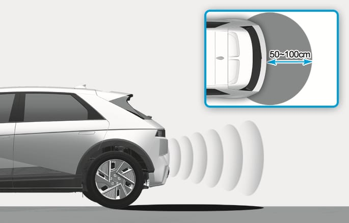

스마트 테일게이트 작동하기
-
다음과 같은 경우 전파 방해로 인해 스마트 테일게이트 기능이 지연되거나 작동 거리가 짧아질 수 있습니다.
-
경찰서, 관공서, 방송국, 군부대, 송신탑, 공항, 항구 등 시설 근처에서 스마트 키를 사용하는 경우
-
스마트 키를 무전기, 스마트폰, 휴대용 충전기를 포함하는 이동 송수신 시스템과 함께 휴대하거나 전열 장치 옆에서 사용하는 경우
-
근처의 다른 차량에서 스마트 키를 사용하고 있는 경우
-
-
스마트 테일게이트를 작동 영역이 길어지거나 짧아질 수 있으므로 주의하십시오.
-
타이어를 교체하거나 차량을 점검할 때 잭을 사용해 차량의 한쪽 바퀴를 들어 올린 경우
-
경사지, 보도 블록 등 고르지 않은 길에 차량을 기울게 주차한 경우
-

2C_SmartTailgateSensingRange
차량을 잠그고 약 15초 이후, 스마트 키를 휴대하고 테일게이트로부터 약 50-100 cm 이내로 접근한 후 3초 이상 기다리십시오.
-
스마트 키가 감지되면 웰컴 경보가 작동하고, 작동 준비가 끝나면 테일게이트가 서서히 열립니다.
-
기온이 영하로 떨어지는 경우 스마트 테일게이트 기능이 원활하게 작동하지 않을 수 있습니다.
-
스마트 테일게이트 기능은 도어를 잠근 후 15초가 지난 후 작동합니다. 단, 15초 이내에 사용자가 운전석 또는 동승석 도어로부터 1.5 m 이내로 접근해 있는 경우에는 작동하지 않습니다(웰컴 라이트 적용 시).
-
도어를 잠근 후 15초 이내에 테일게이트 감지 영역에 스마트 키를 놓아 두는 경우, 약 10분 후 스마트 테일게이트 기능이 자동으로 해제됩니다.
-
차량 안에 스마트 키가 있는 동안에는 스마트 테일게이트 기능이 작동하지 않습니다.